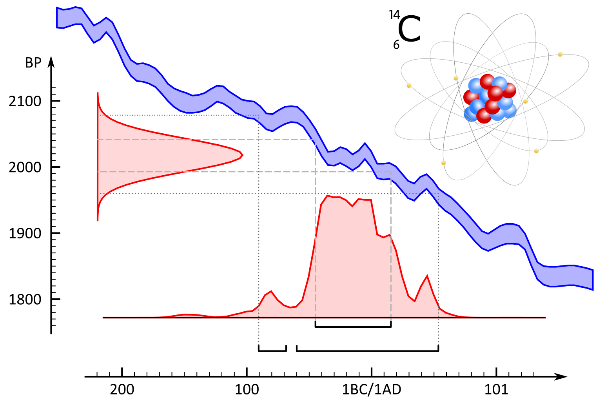

1 Dateren met radiokoolstof
Welkom bij de online versie van “14C: dateren met radiokoolstof”. Deze handleiding werd in 2019 gepubliceerd door het agentschap Onroerend Erfgoed en is als pdf te downloaden op de Open Archives Repositiry (OAR).
Met deze online versie willen we kleine aanpassingen aan de originele uitgave, veranderende inzichten en nieuwe toepassingen van radiokoolstofonderzoek binnen het erfgoedonderzoek - op basis van recente, wetenschappelijke ontwikkelingen - sneller ontsluiten. De basis van deze handleiding blijft de originele uitgave, maar :point_right: hier :point_left: kan je steeds de meest actuele versie raadplegen.
Gelieve te citeren als:
Haneca K., Ervynck A,, Van Strydonck M. (2020-09-07). 14C: dateren met radiokoolstof. Handleiding agentschap Onroerend Erfgoed, Brussel. [online: https://hanecakr.github.io/handleidingRadiokoolstof/]
Oorspronkelijke gepubliceerd als:
Haneca K., Ervynck A,, Van Strydonck M. (2019). 14C: dateren met radiokoolstof, Handleiding agentschap Onroerend Erfgoed 21, Brussel. [online: https://oar.onroerenderfgoed.be/item/5241].
Kristof Haneca
07 september, 2020

 © Flanders Heritage Agency